开场：组织逻辑与推荐书目
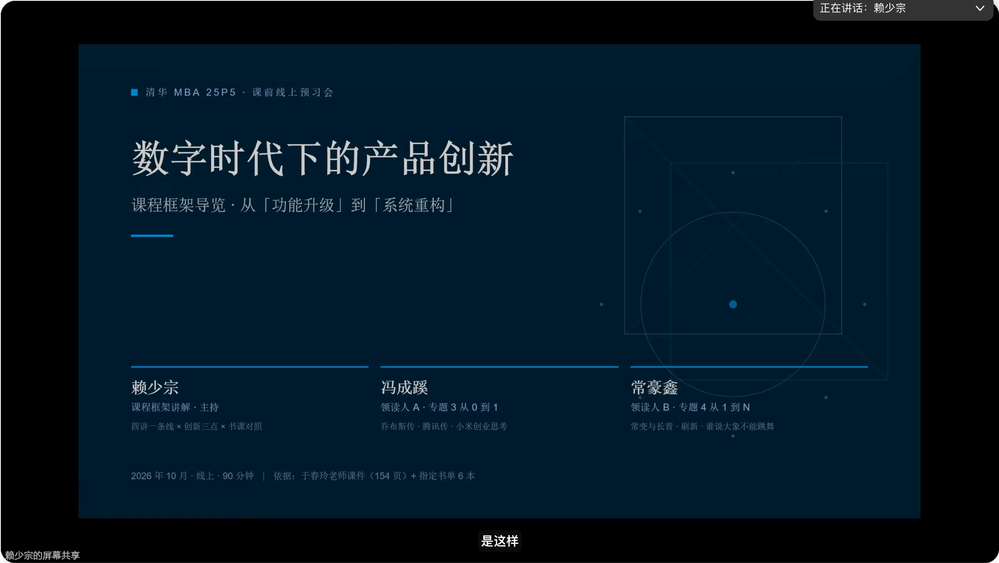
不用等了，开始吧。
应班委的号召，我这边给大家做一个数字时代的产品创新的分享。这次是三个人，我讲一下课程的框架，更核心的是冯成蹊和常豪鑫读老师的指导书籍，分享心得和观点。每个人接近 20 分钟，看大家自己的发挥，有问题随时打断去聊。
流程：我先讲框架，然后他们两位讲案例，最后有一个调研问卷，核心是收集大家的问题，便于老师准备课件时更有针对性。后续也可以短暂交流。
赖少宗的建议：剩下的书尤其是 AI 来了，直接把电子书丢给 AI 让它读，提炼一个万字总结，把核心的东西学到就可以。剩下的按图索骥，哪块感兴趣再去深读。
赖少宗：课程框架与核心逻辑
这门课上一两届的课件被整理成一百多页 PPT，核心词是"创新"，从不确定性到确定性，从艺术到工程（因为创新需要被管理、可以被复制）。课程分五个部分：引言 + 四个专题，每个专题有理论+案例。
引言：德鲁克的逻辑
企业的目的只有一个正确定义，就是创造顾客。 彼得·德鲁克
- 实现这个目的的两大功能是营销和创新。利润只是检验企业效能的指标，不是目的本身。
- 产品创新落到三个手段：技术、管理、商业模式。这三者不是固定关系，跟行业和企业阶段有关。
- 课程把产品创新者定位成"迷你 CEO"，产品经理/创新领导者要跨越管理类、技术类（项目经理、流程经理、各类工程师）的边界去做整合。
四个专题串联
| 专题 | 主题 | 关键问题 |
|---|---|---|
| 专题一 | 环境变了怎么变 | 渐进式跟不上同质化/跨界竞争，必须做颠覆式创新 |
| 专题二 | 往哪个方向做 | 用 NPD 流程锁定值得投入的颠覆性项目 |
| 专题三 | 怎么做好 0-1 | NPD 三环节：用户需求洞察 → 产品定义 → 走向市场 |
| 专题四 | 怎么做好 1-N | 组合管理：单项目最优 ≠ 组合最优 |
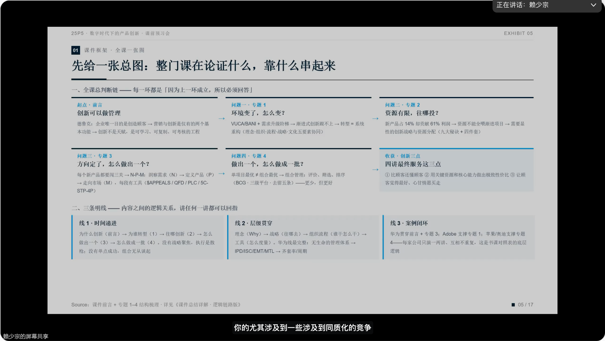
关键数据与模型
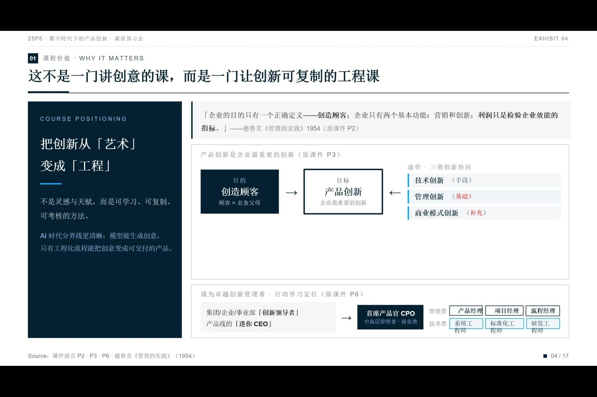
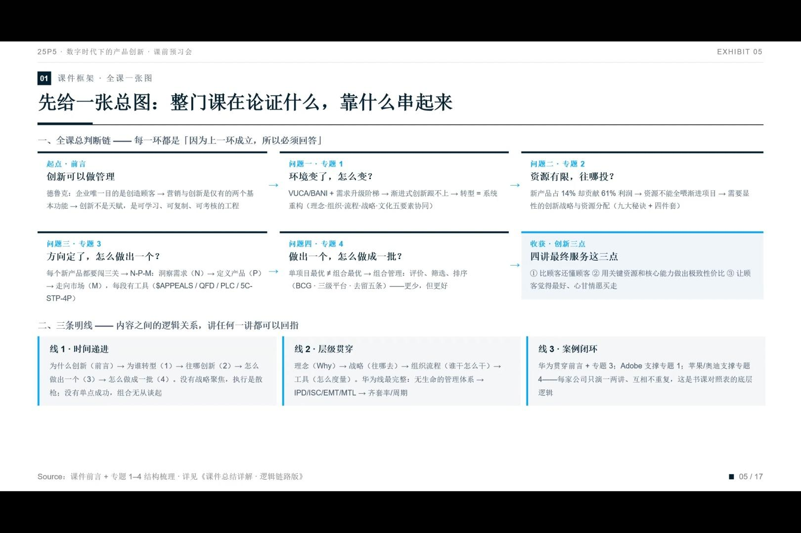
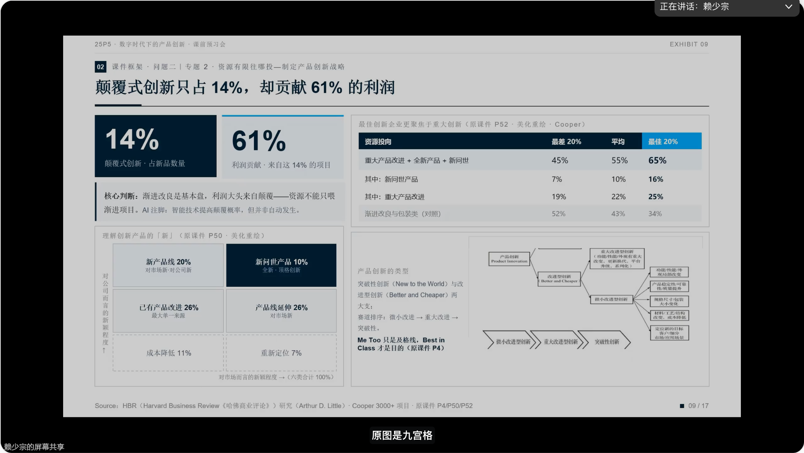
- 颠覆式创新的价值：颠覆性新产品只占 14%，却贡献 61% 的利润；渐进式产品占 60% 多，只贡献 30% 多利润。结论：必须向颠覆式创新转型。
- NPD 流程：用户需求洞察 → 定义产品 → 市场传播销售。最终目标三句话：比顾客更懂顾客（洞察需求）；用关键资源做出极致性价比的产品；走向市场让用户愿意付费。
- 组合管理理念：单项目最优不等于整体最优。车企按定位/价格带分离产品线以避免内部蚕食，就是一个直观例子。
- 创新九宫格：纵轴是对公司而言的创新程度，横轴是对市场而言的创新程度。真正的颠覆式创新（对公司、对市场都是新的）占比非常少。
- 不同竞争力企业的创新占比：最差 20% 企业与最佳 20% 企业，在重大/颠覆式创新上的占比分别是 45% vs 65%。
- 产品创新分类：突破性创新 → 改进创新（重大创新 + 微小改进）。微小改进的例子：改规格尺寸（啤酒 500ml→550ml 同价增量）、改包装、局部性能（车上加手机支架）。跟进策略从 Me too → Best in class。
九大秘诀（战略/组织/战术）
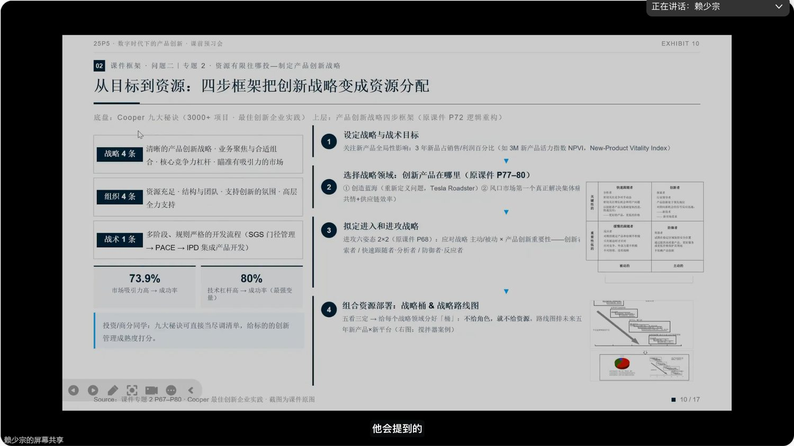
战略（4 条）：清晰的创新战略；聚焦市场；聚焦市场内的产品；明确核心竞争力。赖少宗个人理解：这跟聚焦、差异化、成本优势的经典战略框架没有太大区别。
组织（3 条）：结构与团队；资源充足；创新氛围（文化导向）+ 高层全力支持。
战术（一堆工具）：设定战略战术目标 → 选择战略领域 → 进入战略 → 组合战略 → 战略路线图。战术目标已经是最后落地层面，比如新品占销售利润的百分比、新品动销率/转化率等。
配套概念：五看三定（看行业、看市场、看技术、看竞争、看自己 → 定目标领域打法）。
华为案例作为贯穿主线
- 前言部分用华为案例导入，四个专题在华为身上都有对应动作。
- 华为实际动作顺序：先 IPD（集成产品开发）→ 再 ISC（集成供应链）→ 轮值决策 → MTL 等。注意：企业的实际选择顺序跟科班理论顺序不一样，理论顺序是"创新基因 → 创新策略 → 单项目 → 多项目"，华为是先做 IPD 再补其他。
- 成果数据：供应链集成后合同齐套发货率从 20% → 85%；客户结构上，前 50 大运营商收入占比从 38% → 65%。
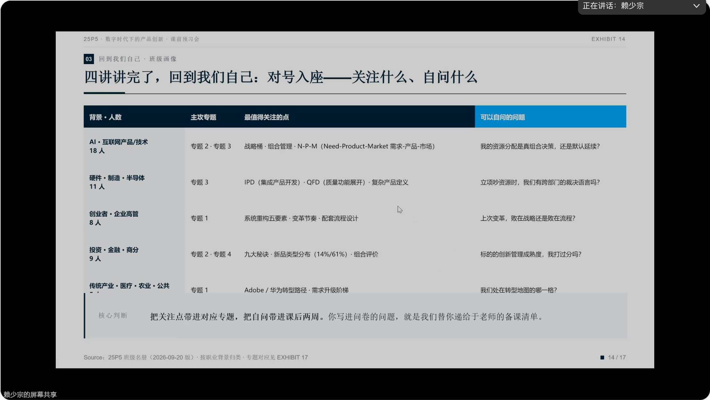
推荐书目与分工
| 书 | 讲解人 | 对应专题 |
|---|---|---|
| 《乔布斯传》（苹果） | 冯成蹊 | 专题三 0-1 |
| 《腾讯传》 | 冯成蹊 | 专题三 0-1 |
| 《小米生态链战地笔记》/《参与感》 | 冯成蹊 | 专题三 0-1 |
| 《谁说大象不能跳舞》（IBM） | 常豪鑫 | 专题四 1-N |
| 《华为管理变革》 | 常豪鑫 | 专题四 1-N |
| 《刷新》（微软） | 常豪鑫 | 专题四 1-N |
冯成蹊：苹果 / 腾讯 / 小米的 0-1 案例
我接着赖少宗往下拆第三个专题，从 0-1 做产品这个方面，这三本书里每本挑了 4-5 个产品案例，简单跟大家过一下，然后关联到老师接下来会讲到的 NPD 三个方向里分别重点都是啥。
我对这门课的理解：最关心的是一个想法、一个新的想法怎么变成用户有意愿去选择的产品。工作中可能基于小的客户需求、一个功能或一个技术就开始讨论，然后很快进入怎么实现。老师的课件会系统性地提醒我们：从整体再往前，用户到底需要什么东西？怎么去定义用户的需求？技术实现完之后，产品达到能用的状态，怎么去触达用户？用户为什么会持续愿意购买？大概是以这几个角度触发我们思考整体链路框架。
接下来的分享，会以产品视角和我这些年的经验，从技术、设计、营销、资源等安排，回到当时的情况下，看用户希望得到什么东西。
苹果（《乔布斯传》）
营销哲学三原则（1977 年 Apple II 时期）
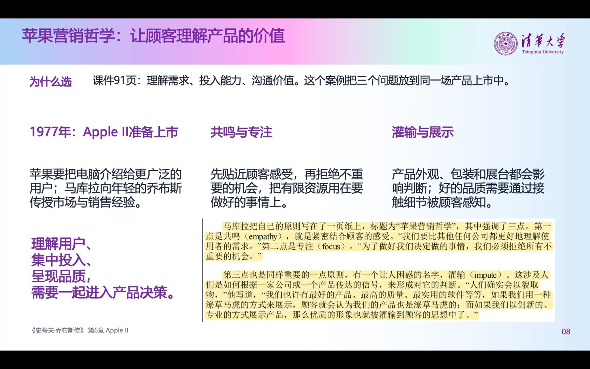
马库拉加入苹果时带来一张纸，写了三个词：
- 共鸣（Empathy）：比别人更能理解使用者的需要，跟客户产生共振。
- 专注（Focus）：为了做好选定的事情而拒绝不重要的机会。
- 灌输（Impute）：人会根据产品传递出来的信号判断品质。客户没深入使用产品之前，从展台设计、产品标识、展示方式、介绍手册等一系列触点上形成第一印象，这个第一印象决定了产品的品质定位和品牌定位。
我的提炼：产品要做好自己的定位，同时还要做好"客户会从什么视角看你的产品"。中间有大量设计、包装、介绍手册的工作，这些都是用户接触产品的第一印象。
Mac 电脑：从技术到产品的距离（1979 年施乐 PARC 参观）
乔布斯在施乐 PARC 研究中心看到三项关键技术：图形界面、鼠标、位图显示。当时大部分电脑还在用命令行。苹果的关键动作不是照搬，而是：
- 把鼠标做得简单（施乐的鼠标键多、造价高）；
- 把成本做得非常低；
- 让它在普通表面上就能用；
- 定义了新的交互方式：窗口怎么移动、文件怎么拽到文件夹里。
施乐自己也推出了 Star 电脑，但价格、速度、市场选择表现都不好。
1997 年乔布斯回归：产品线聚焦
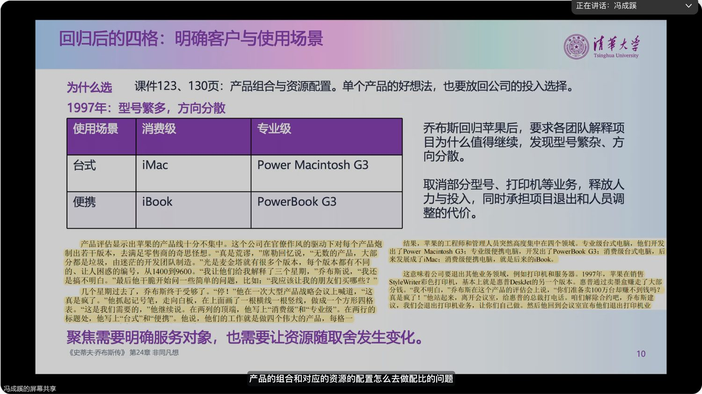
乔布斯被赶走又被请回，公司面临的最大问题是产品线太多，内部都说不清有多少个产品，没人能回答"我朋友要买一台电脑，我推荐哪一台"。
动作：画了四个象限（横轴：消费级 vs 专业级；纵轴：台式 vs 便携），每个格子只允许留一款产品。连带砍掉不赚钱的鸡肋项目，包括打印机业务（耗材收益大头被惠普拿走，苹果自己利润很差）。伴随项目取消、人员调整，整体资源跟着方向做移动。
iPod：NPD 全链路串起来的标杆案例（2000 年前后）
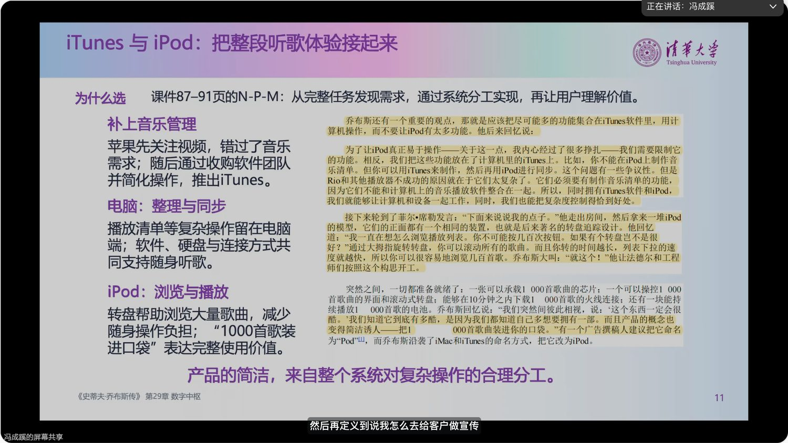
背景：当时大家用 Walkman/CD 随身听听歌。苹果当时把注意力放在视频上，错过了音乐播放需求，乔布斯自己承认没赶上。
补课动作：收购一个音乐管理软件团队，把软件从复杂做到简单，推出 iTunes。发现市面上音乐播放器体验不好，容纳歌曲少、歌单长时交互不顺畅。团队发现东芝的小型硬盘，把方案整合进产品。
关键取舍：把用户旅程切成两端：
- PC 端（iTunes）：放复杂的音乐管理、歌单整理等操作；
- 移动端（iPod）：解决大容量（当时几 G 的小硬盘）、电量、盲操作（转盘式交互，不用看屏幕就能选歌、调音量）。
宣传策略的精妙：不说"几 G 容量""几百兆"，而是告诉客户"放在牛仔裤小兜里能装 1000 首歌"。客户对 G 和兆没有体感，对"1000 首歌"有体感。
iPhone：开创智能手机时代（2007 年）
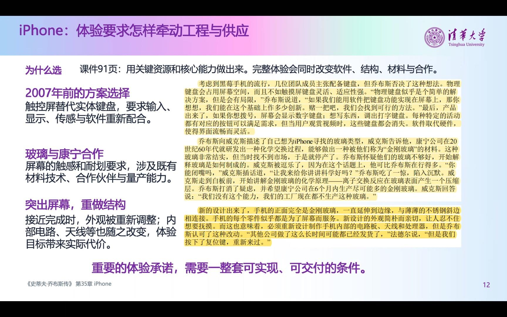
背景：在 iPhone 之前，沃达丰、黑莓、诺基亚的塞班系统其实都算"智能手机"，但都没有摆脱实体键盘和手写笔。
发布会策略：乔布斯前 6 分钟说"我要发布三款产品"，一个 iPod、一个网页浏览器、一个新时代的手机，最后告诉大家这不是三款，是一款。
核心交互理念：为什么要用键盘输入？为什么要塑料感很重的外壳？为什么要用笔？人天然就有手指，用手指触达、捏合就是最自然的交互方法。
供应链重塑的两个细节：
- 电容屏替代电阻屏：电阻屏是当时主流，电容屏是激进选择。
- 玻璃替代塑料：当时没有厂商能做出来，苹果联系了康宁，康宁针对这个技术做了自己的生产线，一代代跟着产品要求迭代，把材料、动力学、合作关系全部重塑。
外观反复：第一版金属外壳会干扰视频信号，改成玻璃外壳后内部电路板、天线都得全部重新设计，整个团队工作压力巨大，最后完成了。
腾讯（《腾讯传》）
OICQ：本地化创新（1998 年前后）
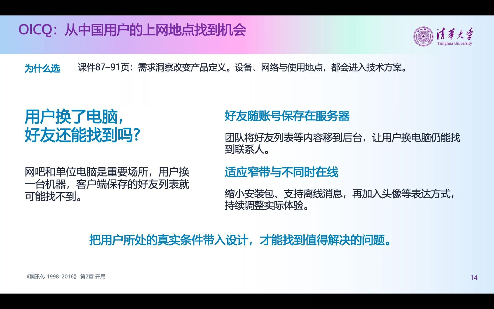
背景：国外有 ICQ，国内大家常用 MSN。当时国内大部分网民在网吧上网，家里买电脑、拉拨号宽带都很奢侈。
痛点：网吧场景下，聊天记录和好友列表没办法跟着人走，当时的 ICQ/MSN 都是本地存储。
关键创新：把好友列表和聊天记录存储在云端。任何人换一台电脑/换一个网吧，登录后直接从云端拉下好友列表。连带技术优化：客户端可以做得非常小（书里数据约 200 多 KB），在拨号上网几 K 几 K 的速度下，下载安装很快。同时把一些技术放到后端服务端去做。
其他本地化小创新：离线消息/在线消息（头像黑白/彩色），适配当时网速慢、上网时间不同、不能 always online 的环境。
改名小典故：最早内部叫 OICQ（Open ICQ 之意），被 ICQ 告了，才改名叫 QQ。
QQ 秀：从观察到落地的商业化转折点
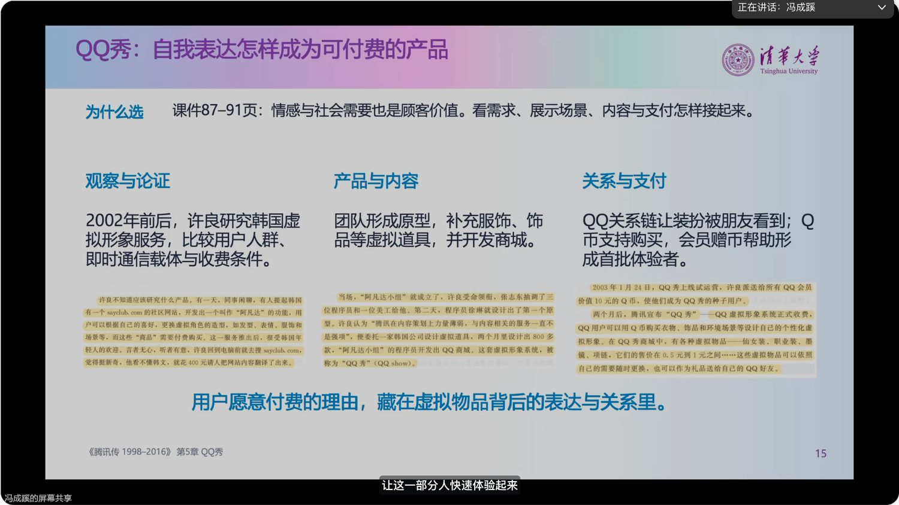
背景：OICQ 做了几年不赚钱，服务器很贵，马化腾一度想把 QQ 卖掉。关键人物：员工许良，看到韩国出现一个叫 Avatar 的虚拟形象服务，在韩国成了爆款。
许良的判断：人在上网过程中会用虚拟形象代替自己在网络上做社交；中国人会更习惯在即时通讯软件里做这件事，而不是在网站里做。
落地过程曲折：第一版方案上报后，高层一个多月没回应。许良自己补做调研，做出完整方案和初步系统，二次专项汇报才得到高层支持。
产品形态：虚拟形象 + 商城 + 道具 + Q 币支付；推出红钻会员，每天送多少套衣服；冷启动时给所有老 QQ 会员送 10 个 Q 币，让这批人先体验起来。
QQ 邮箱：抓客户驱动痛点做快速迭代
背景：张小龙做 Foxmail 被腾讯收购后，最初是想做管理的，没深入一线。QQ 邮箱做得很笨重，市场份额不高（当时新浪、163 是绝对霸主）。2006 年开始，张小龙重回一线主导轻便版。
抓到的核心痛点：
- 大附件：当时邮箱容量就 50-200 MB，附件大小限制严格，没有离线的网盘。QQ 邮箱首创临时存储盘，一定容量以下永久存储，超过给 7 天或 30 天临时空间，最大可发到 1 GB。
- 邮件发送状态：以前发出去不知道对方有没有收到、有没有打开看。QQ 邮箱最早做了这两个状态反馈。
微信：找到真正的刚需点
背景：微信不是最早的。雷军做的米聊比微信早一段时间，两者有过角逐。早期试错：微信最早主打"发短信省短信费"和"图片分享"，都认为图片分享是刚需，但实际没起来。
真正起来的功能：摇一摇 + 附近的人（Top Box），用到了移动互联网重要的地理位置能力。这两个功能出来后，才验证了"这是真正的刚需"。之后才动用腾讯内部资源，包括 QQ 的关系链导流，一骑绝尘甩开米聊。
腾讯赛马机制
赛马是腾讯内部的文化，微信就是三个团队赛马，张小龙团队优先胜出。现在视频号应该也是类似机制。
小米（《小米生态链战地笔记》/《参与感》）
MIUI：社区驱动的小螺旋
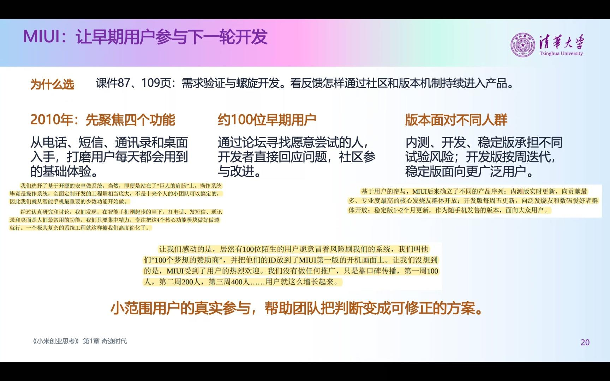
背景：2010 年小米刚起步时，安卓体验普遍不好。MIUI 是小米三驾马车之一（MIUI、米聊、小米手机）。关键定位：把功能聚焦到四个，电话、短信、通讯录、桌面，按国人的使用习惯做改造。
玩法：基于不同版本（内测版、开发版、稳定版）找到核心用户人群（发烧友/米粉），激发他们形成内测环境。每出一版系统，论坛第一时间刷机反馈。
七字诀：专注、极致、口碑、快
雷军的反思：早期创业时什么活都做，方向分散。后来意识到专注应该专注在"用户需要的功能方向上"，而不是做成"自己秀情怀、自我感动"的能力。
反例：小米手机卡针上打小米 logo，成本贵，但带来多大的用户反馈和价值？不一定。所以专注和极致要关注的是功能点，以及这个点要有实际回报和反馈时才投入。
爆品逻辑：让用户重复购买
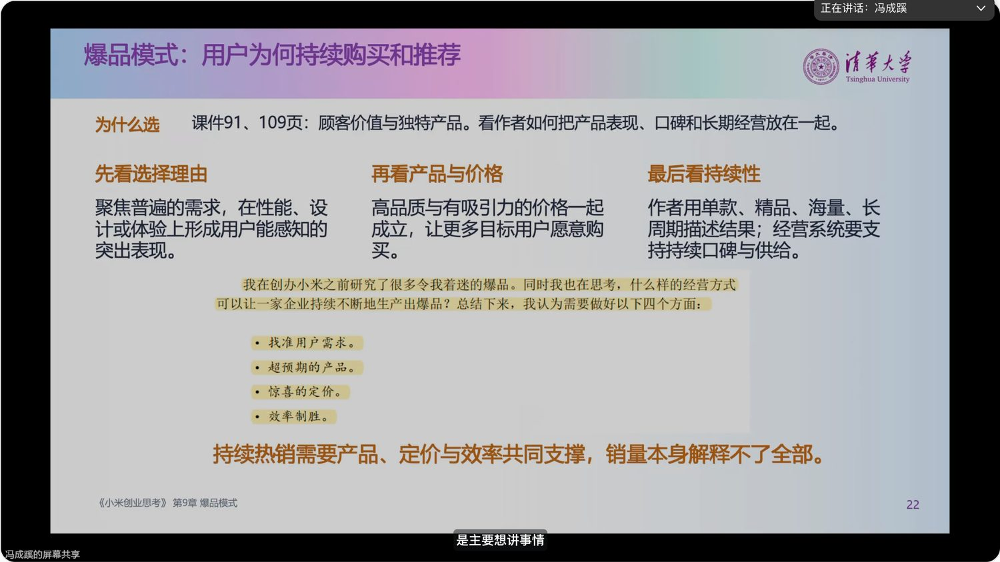
雷军的总结：爆品四特征，单品、精品、海量、长周期。
超预期的具体含义：基础功能做得好是用户本来就需要的；在全面过关的基础上，一定要有某个方面足够突出，用户才会有足够明显的感觉。
爆品要回到：给给客户一个购买和重复购买的理由。
5% 综合毛利率红线：商业化定义
雷军的硬性承诺：小米硬件综合毛利率永远不超过 5%，相当于给自己定了一个铁人三项。
关键区分：研发总投入和单件产品分摊成本是两个完全不同的数字。想摊薄单件成本，一定要把销量做高。要把销量做高，就要考虑渠道、周转率、经营效率等其他维度。
商业化路径：通过硬件不挣钱，通过云分发、阅读等软件增值服务挣钱，这是一种新的产品商业化定义。
小米插线板：成熟品类的创新机会
背景：雷军做传统插线板改造时，行业已经有几十年历史。需要回答"传统行业为什么要跟我合作"。过程：找到很多可以改进的点（外观、工艺、排布等），但实际生产中发现太理想化，成品率非常低，废品率特别高。接着又做了很多小的排布创新。最终成果：第一次做出来的小米插线板外观非常惊艳，品质还做得特别好。
回到课程核心：做产品创新一定要知道：
- 我自己做的产品里，用户到底是谁？
- 用户想要的东西是什么？
- 怎么通过一些东西去判断到底是不是对的？
- 有没有方法快速通过小样本做验证？
- 验证完之后怎么做迭代？
常豪鑫：IBM / 华为 / 微软的 1-N 规模化
我负责讲课程的最后一部分，就是 1 到 N。首先你要从原有的业务去找到一些创新思路，经过各种各样的试错、讨论，最后闯出 0-1 之后，你如何把它去做大做强、做聚焦。这部分第一个我会讲得快一点，后面有三本书自己的理解，最后有一个实践分享讨论。
组合管理的核心：先小后多
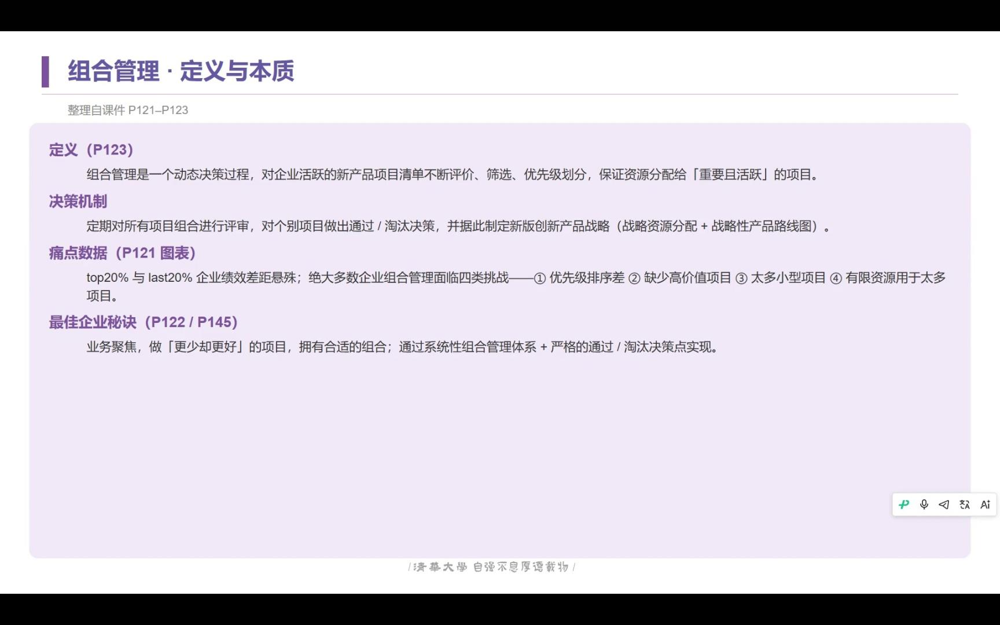
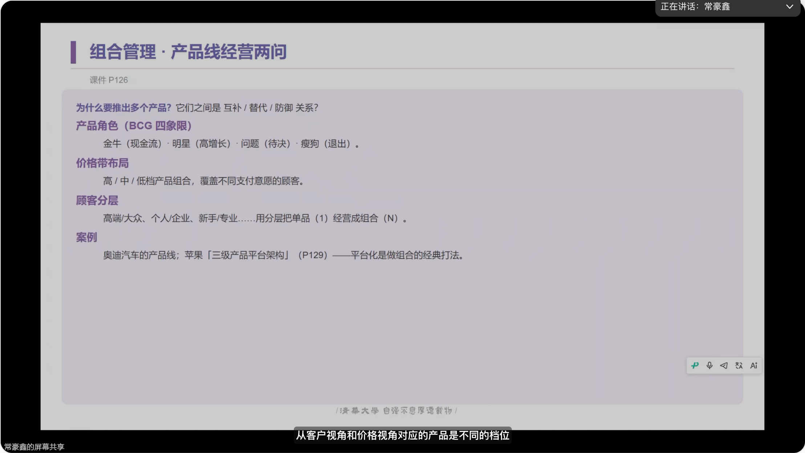
一句话概括：当你已经明确一个创新项目、闯出 0-1 之后，如何用现有资源（绝大部分资源还是要支持原有业务）去有效分配，把创新业务做大。
先小：Less is more。0-1 已经过了，不要再试错找新方向，要围绕已经趟出来的战略方向、新场景和定位，做得更准、更聚焦。一般会从行业内的头部客户、大客户做起，先做灯塔项目，做完再复制到中等、小型项目。
变多：规模化。在"小"的前提下，明确趟出来之后就直接复制，因为复制的边际成本最低，是最适合做规模化的路径。
价格分布策略：可以选择从小往上打（类似小米），或者从高端往低端打。价格和客户视角对应的是不同档位的产品。
产品矩阵：苹果是最典型的例子。iPhone 之外做了 iPad、手表、Mac；iPad 内部又有 Pro、Air 等不同版本面对不同客群。把整个产品矩阵做完之后，可以更精准地服务客户，把整体市场规模做得更大。
产品生命周期：滚动孵化
现金流产品（金牛）：技术壁垒已经没那么高，但市场体量大，提供现金流。有了金牛之后，要积极布局下一个明星产品。等金牛走成瘦狗、逐步退出后，新的明星产品成长为新的现金流。这是一个滚动过程。
1-N 的冲突决策五条原则
| 原则 | 说明 |
|---|---|
| 符不符合主航道 | 哪怕短期是非常盈利的项目，但不符合主航道、后面没有复制性，可能就是一个定制 |
| 天花板 | 整个市场规模以及市场本身的成长速度高不高。例：华为当年基于电信传输 vs 基于互联网 IP 的选择，互联网 IP 当时市场份额只有 4%，但复合增长能达到 30% 多，后续市场规模天花板非常高 |
| 盈利能力以及战略价值匹配度 | 非盈利或跟战略方向偏差的，不是主干道，只是分支 |
| 实现难度 | 这个其实在 0-1 阶段就已经决定了。五看三定里的第一个就是先找自己的切入点定位，也就是护城河。如果没有护城河本身，压根就不该投 |
| 各种失败风险 | 属于整个公司稳定性运营，包括很多财务知识、现金流等因素 |
战略桶与产品线 CEO
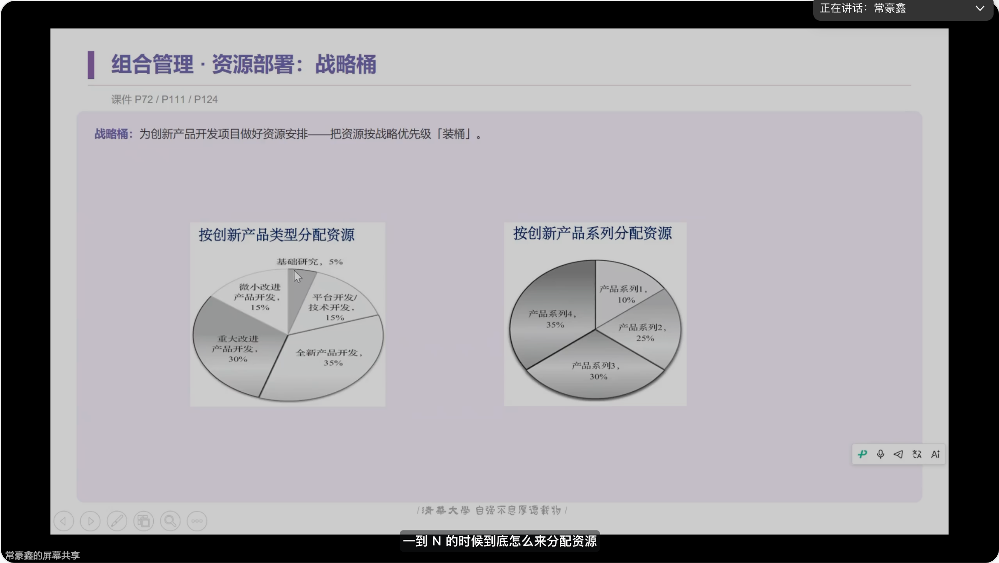
战略桶：1-N 时到底怎么分配资源？按创新产品的类型分配，全新产品应该占多少？原有产品的微创新应该占多少？如果都是创新产品但分很多系列（金融赛道一个、能源赛道一个），不同系列应该往哪个方向投资源，也要按实际战略定位做好资源分配。
产品线 CEO：创新赛道不可能全员上，一定是从小团队做起，符合 AI Native 的趋势。产品线负责人（不是产品经理）可以是任何角色，他就是一个小型 CEO，要考虑营销、服务、技术、财务、研发等所有维度，对整个产品线或创新产品负责盈亏。总得有人负责盈亏，否则这件事本身走不远。
三本书的时间轴关联
| 时间 | 事件 |
|---|---|
| 1993 | IBM 不行了 |
| 1994 | 郭士纳空降到 IBM，当年实现盈利 |
| 1997 | IBM 营收接近前高；华为 93-97 年出现大量危机 |
| 1997 年底 | 任正非去 IBM 学习 |
| 1998 | 华为开始实行 IPD 流程 |
| 之后 | IPD 已经迭代到 13 个版本 |
IBM《谁说大象不能跳舞》
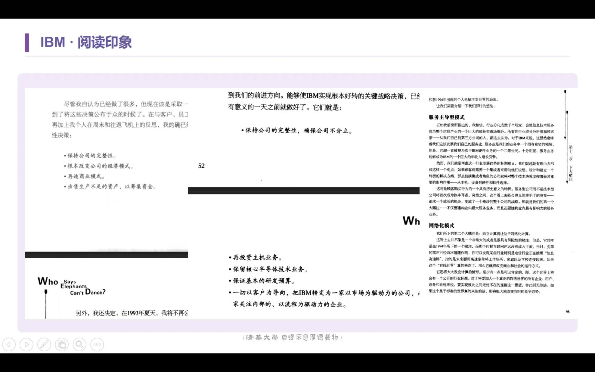
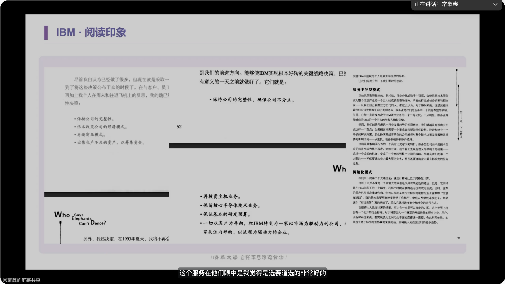
整体感受：这本书完全是靠郭士纳的个人能力。大概率是做了一个非常大的风险决策，"要不然就死，要不然就活"，很巧的是他们活下来了。他的能力非常强。
背景：郭士纳之前不想来 IBM，被劝了 3-5 次、劝了大概半年，才觉得有挑战性才来。来的时候战略还没有定，是在过程中不断思考、不断刷新战略，最终让 IBM 走出困境。
为什么不能分拆：当时很多人觉得 IBM 必死。郭士纳认为大象不能拆，要聚在一起，因为大体量下找新的战略定位需要综合解决能力。一旦分拆，就会被大量小企业蚕食。
第一个关键动作：抓现金流：IBM 刚开始花销非常大，硬件开发、全国各地的租赁业务和地产业务、组织内臃肿和开销。郭士纳第一年没有做战略的事，先抓现金流，先活下来。常豪鑫联想到：如果面临大企业做战略转型，财务非常重要。之前卓老师课程讲过"财务驱动的战略转型"，在体量非常大、行业非常成熟时，财务策略甚至可以决定公司下一步的发展。
四个关键决策（刚进公司时）：
- 保持公司的完整性（不分拆）。
- 改变公司的经济模式：以前全是卖硬件+围绕硬件打包操作系统/数据库，其他公司都在做模块化软件抢 IBM 份额。新模式：碰到 Oracle 的数据库，也可以拿过来用，把最好的软件结合自己的硬件，形成组合产品，提供端到端完整解决方案。
- 改变商业模式：从硬件强制转向软件+服务。
- （第四条没有明确讲，但第四部分对应"服务主导型"和"网络化模式"两个方向。）
94 年的两个模式认知：服务主导型 + 网络化模式。在此之前 IBM 是出售主机+配套软件的打包模式，定死的。这两个模式认知出来后，IBM 认为谁做硬件不重要、谁做软件不重要，谁能提供端到端的解决方案才重要，顾客掏一个钱，什么都不用管，整个公司的信息化、数字化全搞定。基于这个战略认知，做了更大的商业模式调整，也包括后面的多元化布局。网络化本质上也是解决"从不流通的状态转向动态服务"的过程。
战略刷新但保持延续性：后面战略刷新了一下，但战略本身没有变化，完整性、经济模式、商业模式，这时具象化了：主机业务是核心不能再投资但保留；保留核心的半导体技术；以客户为导向，转化成市场驱动的服务性公司。
华为《华为管理变革》
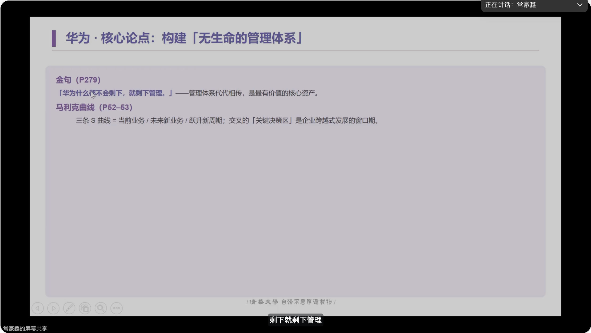
IPD 之外：IPD 引入后发展好了一段时间，但也面临大企业病，流程越来越臃肿。后续又做了 ISC（供应链集成）→ ISC+ → IPD+ 等持续变革。整个流程管理方式也是动态调整的。
任正非的金句："华为什么都不会，剩下就剩下管理。"他希望华为能成为一个无生命的管理体系，生命总是有尽头的，他怎么样能通过管理体系让公司不断延续下去（比如他的领导力没了之后）。这就是马利克曲线（第二曲线）：第一个曲线下来后，有第二增长曲线托起来，形成连续不断往上涨的曲线。靠的就是整套管理体系代代相传。
常豪鑫自己的实践（跟华为生态合作很多）：
- 海思最牛的不是芯片大牛，而是流程管理。靠流程管理，不用每个人都是大牛，可以做人才梯队建设，哪怕这个人只会一部分技能，也能找到自己合适的位置，同时通过流程给这个人托下线、托底。
- 华为跟海思合作的人，有时候会觉得"这个人好拗、不专业、只会执行"，执行的依据就是公司的流程。早期 2020 年制裁之前，海思把国内嵌入式芯片市场整个垄断了，最后一代芯片 3559A 没有任何人可以跟它打，90% 以上市场份额。被制裁后整个市场份额才被瓜分，才有了瑞芯微、SigmaStar 等新厂商。最近海思解决卡脖子问题之后，市场份额又开始往上涨。
- 结论：并不是每个人都很精英，而是可以做梯队建设，因为这样的成本对企业是最好的。它怎么保证不同人的素质技能？靠流程、靠管理。
两个跟华为合作项目的细节：
- 华为的门锁支持掌静脉识别。做验证时涉及手掌数据集，华为对数据验证标准是按 BMI 分级定义胖瘦，从而定义手掌数据集的分布。常豪鑫他们觉得"人胖手不一定胖"，但华为说"这都是个例，我按标准来"。
- 验收时会细化到数字：文档包括打灯的距离（精确到毫米）、门锁识别过程精确到毫秒。执行的人其实不懂算法训练、不懂场景，只管执行，执行依据是公司流程里定义出来的。
微软《刷新》
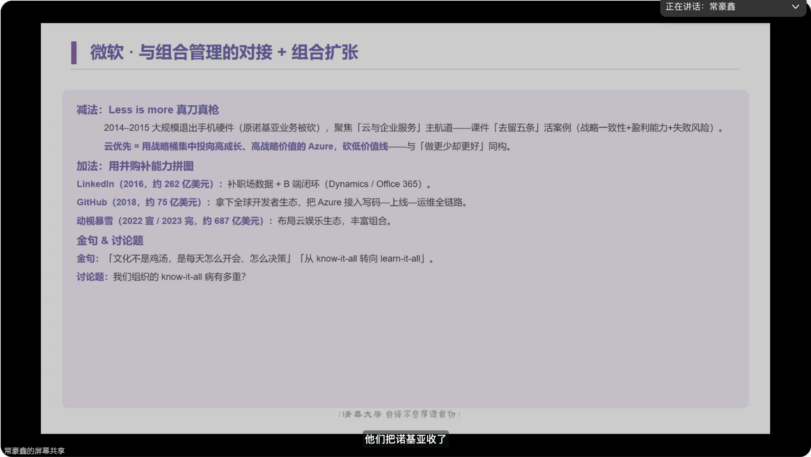
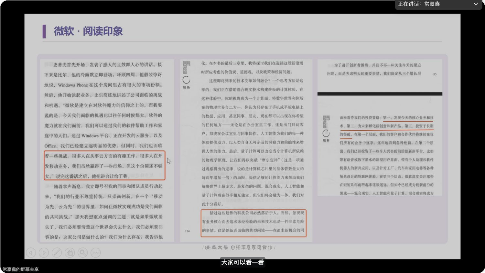
大背景：微软早期抢了 IBM 的客户（操作系统和工具类）。后来面临谷歌和苹果的竞争，尤其是移动业务的增长。
收购诺基亚：为了应对移动业务，把诺基亚收了，想推 Windows Phone。但实际刚推出来，他们更看好的是云计算赛道。
关键动作：CEO 纳德拉上任后第一件事是裁掉 1.8 万人，Windows Phone 团队。战略分析认为这个市场已经失去先机，不可能再去抢占安卓和 iOS 的市场，这个市场不会允许第三家存在。转而去聚焦云和企业服务赛道。
聚焦后的组合管理：围绕云计算做并购，并购领英、Mojang（我的世界）等，补全整个能力拼图。
三张截图：
- 纳德拉接手时的时机很巧，肯定有幸存者偏差。比尔盖茨介绍他时讲到"我们虽然赢得了一些市场，但份额还不够"，当时微软在 Windows 和 Office 疲软的情况下，新搞的云服务和搜索开始出现一些苗头，公司本身已经站在战略转型和新赛道的起步阶段。
- 新战略一句话："移动为先，云为先"，整个定位完全变了。
- 投资策略三个方向：人工智能、虚拟现实、量子计算。除了当时正在做的云计算之外，他们很早就确认了未来的赛道。这时就可以做比较好的布局：核心业务慢慢扮演现金流，但扮演到什么时候会衰退？明星产品什么时候孵化、什么时候扩大规模成为新的增长点？走到领先无人区的时候，如何通过创新突破新市场、找到新蓝海？这就是 CEO 的战略视野能不能足够高、足够长，带领公司做更大的一到 N。
三本书对照
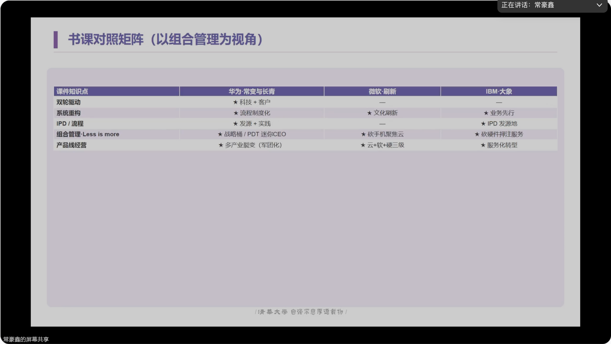
| 维度 | IBM | 华为 | 微软 |
|---|---|---|---|
| 核心动作 | 不分拆、做集成服务订阅 | 组合管理、IPD、产品经营、流程制度化 | 文化刷新、砍掉手机业务、聚焦云计算 |
| 关键决策 | 郭士纳四个关键决策 | 任正非引入 IPD + 持续变革 | 纳德拉裁 1.8 万人聚焦云 |
| 转型方向 | 硬件 → 集成服务+软件 | 流程化管理体系 | 移动 → 云计算+AI |
互动问答与现场讨论
Q1：乔布斯的判断力是怎么形成的？可复制吗？
分析了苹果之后，为什么乔布斯跟大家平常想法不一样？这个东西很重要，判断力是可复制可学习的吗？
简单结论是不可复制。把产品经理分两系：
- 爹系产品经理（乔布斯）："我不要你觉得，我要我觉得。我觉得好的做出来就是好的。"他是定义需求的人。这是天才般的 Sense，有可能他定义的就是别人想要的，你去定义就不是。这是真 Sense 的过程，没办法做。
- 妈系产品经理（雷军）：你不确定要不要的情况下，你告诉我，我快速给你实现；你需求会变化，我会跟着你需求去变化。贴着你走。
王鑫总结：嘘寒问暖 vs 不管你要不要就按我的来。
冯成蹊的结论：更多的、可能可复制的是雷军这种做法，快速找到客户需求、快速迭代。这是大部分产品经理能做出来的、比较能复制的方法。乔布斯就是神。
Q2：IBM 的转型靠郭士纳的个人决断力，这种战略认知怎么提升？
豪鑫那边 IBM 也是靠个人判断、决断力做起来的，核心还是想明白。第二曲线、第一性原理喊了很多年，真正做的时候都不明白。有没有什么方法可以提升？
郭士纳去 IBM 之前不属于 IBM 体系，是另外一个公司的 CEO，跟今天分享的其他所有公司都不一样，他是空降的。
空降之后，他竟然能够对这个公司、这个行业有那么清晰的认知，最终还能预判出来未来有互联网、未来有服务主导。
IBM 以前是一整套封闭的解决方案，必须选我整套的方案，所以每一个做数据库做操作系统的都可以从它身上挖一块肉。郭士纳意识到"我不可能做垄断，这个赛道太大了，我要做的是生态、做的是集成"。这种认知在那个时代非常非常少。
Q3：关于减法
查了一下 AI，说乔布斯为什么简单一点？他会先问"人最自然的方式是什么"，而不是"加多少功能"。他有减法强迫症，把禅宗的学问联系在一起。反观我们自己：一般会想"我是不是要多加点功能？多市场营销？堆一点卖点？"
这就是典型的战术上的勤奋，掩盖战略上的懒惰。
Q4：AI Native 组织实践的两个困境
背景：常豪鑫所在的公司 5 月份俱乐部组织活动时提了 FDE（Forward Deployed Engineer）、Pod 等概念。他挑了一拨人成立了虚拟组织承担 FDE 角色，聚焦商业交通安全和职场两个赛道。
做法：先通过几个 KA 灯塔客户，产品线直接出人、研发直接出人，找架构师直接上项目交付打磨。因为这个时候交付团队还没学会。打磨完成后沉淀形成小的 Pod，把更多场景不断沉淀下来持续裂变，目标是形成最高效、响应速度最快、综合能力最强、技能面最全的 AI Native 组织。
困境一：小 Pod 变得臃肿，想做 AI Native 的小组织，但产品的架构还有很多分层。做金融客户时早期定义了三个核心成员，但做的过程中发现很多研发组件、过往的开发背景还是需要拉很多人进来，小 Pod 逐步变得越来越臃肿。在不同场景里都碰到了。
困境二：核心人员抽离不出来，希望 FDE 有阶梯，早期攻坚之后可以交给阶梯成本低一点或技能少一点的人去承接，但实际上撤不出来。
背景因素：整个公司没有 AI 化。
影响：高价值的人做高价值的事，但进了项目之后很难抽身，反过来会影响最核心的战略规划、产品规划或其他核心工作。
问卷与收尾
发了课程反馈问卷，收集三个核心信息：背景、诉求、对老师最重要的一个问题。也欢迎没来的同学填，可以在课程群里发。
做读书会的关键诉求就是希望大家通过前面的梳理盘点，围绕自己的实际工作需求给老师反向提建议，哪块想听得更多、工作中跟课程相关的疑问。这样老师回复的针对性更强，开课之前有时间优化课件。
赖少宗会跟常豪鑫、冯成蹊收集课件打包发到课程群，并把相关文件传到飞书。
金句摘录
企业的目的只有一个正确定义，就是创造顾客。 彼得·德鲁克（课程引言）
单项目最优不等于整体组合最优。
技术只是产品的基础能力条件，如何简化操作包装成产品才是关键能力。
每一句体验的承诺，背后都要找到能支撑它的工程或供应条件。 冯成蹊
用户购买的并不是虚拟货品本身，而是虚拟货品背后在虚拟世界里跟朋友的连接。 冯成蹊
基础功能做得好是用户本来就需要的；在全面过关的基础上，一定要有某个方面足够突出，用户才会有足够明显的感觉。 雷军（冯成蹊转述）
战略规划应该不要太勤奋，想清楚干就好了。战术上的勤奋，掩盖战略上的懒惰。 常豪鑫
华为什么都不会，剩下就剩下管理。 任正非（常豪鑫转述）
并不是每个人都很精英，而是可以做梯队建设。它靠流程靠管理。 常豪鑫
爹系产品经理是定义需求的人，这是真 Sense，没办法复制。妈系产品经理是快速响应需求变化，这个可以复制。 冯成蹊
本课逻辑脉络图
点击展开：从德鲁克到 AI Native 的完整推理链
两大功能：营销 + 创新。利润只是检验指标。
产品创新者是"迷你 CEO"，跨越管理类和技术类边界。
14% 颠覆性产品 → 61% 利润；60%+ 渐进式产品 → 30%+ 利润。必须转型。
NPD 三环节：Needs（用户需求洞察）→ Product（产品定义）→ Market（走向市场）。
- 苹果：营销哲学三原则（共鸣/专注/灌输）→ 施乐技术 → Mac 简化交互 → 四象限聚焦 → iPod NPD 全链路 → iPhone 供应链重塑
- 腾讯：OICQ 云端存储本地化 → QQ 秀情感/关系变现 → QQ 邮箱大附件+状态反馈 → 微信摇一摇验证刚需 → 赛马机制需要战略冗余
- 小米：MIUI 发烧友社区小螺旋 → 七字诀专注极致口碑快 → 爆品单品精品海量长周期 → 5% 毛利率 → 增值服务挣钱 → 插线板成熟品类创新
- 先小：Less is more。灯塔客户 → 复制。
- 变多：规模化。金牛 → 明星 → 瘦狗滚动孵化。价格带：从小往上 or 从高端往低端。产品矩阵（苹果 iPhone/iPad/Watch）。
- 五条决策原则：主航道 / 天花板 / 盈利能力 / 战略价值匹配 / 实现难度。
- 战略桶：按创新类型/系列分配资源。
- 产品线 CEO：小型 CEO 负责盈亏。
- IBM：郭士纳四个关键决策，不分拆 / 抓现金流 / 经济模式 / 商业模式 / 服务主导。
- 华为：IPD + 流程管理。人才梯队 + BMI 验收标准。流程给普通人托底。
- 微软：裁 1.8 万人聚焦云。"移动为先，云为先"。投资 AI/VR/量子计算。
1. 小 Pod 变臃肿（公司整体未 AI 化）
2. 核心人员抽离不出来（影响战略规划）
待办事项
填写课程反馈问卷，结合个人工作需求向老师提出针对性问题。
全体参会人员将本次会议的课件、视频及文件打包整理后发送至课程群。
赖少宗将相关课件及文件上传至飞书。
赖少宗